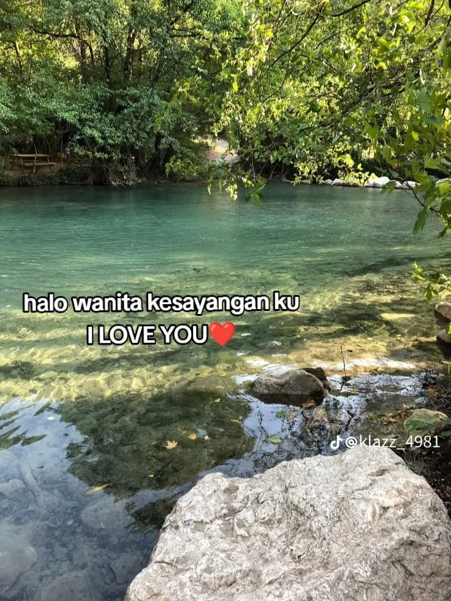
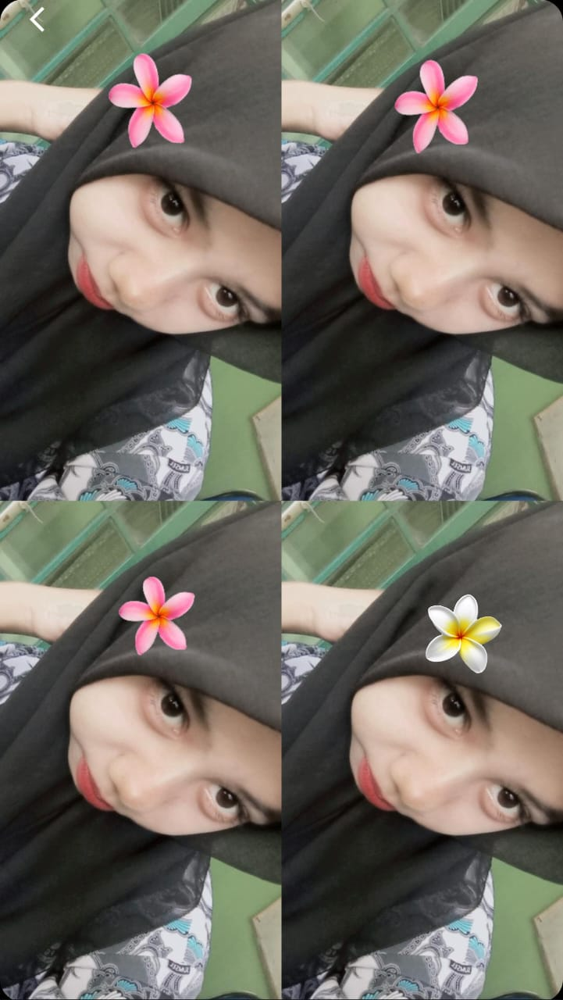
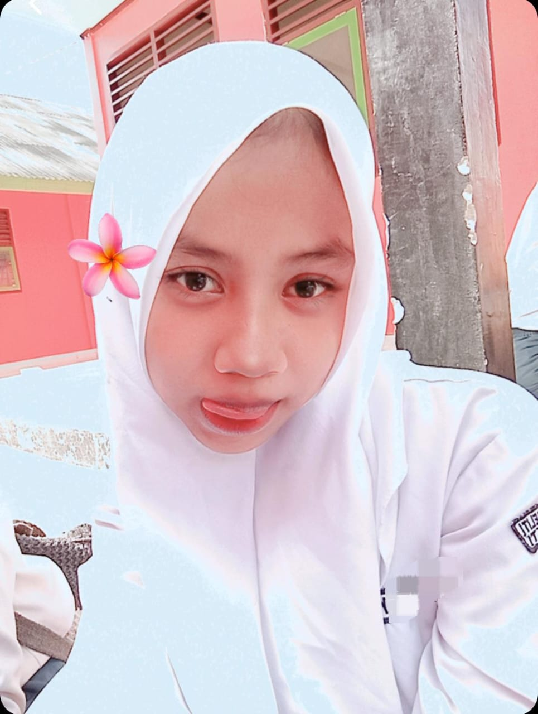
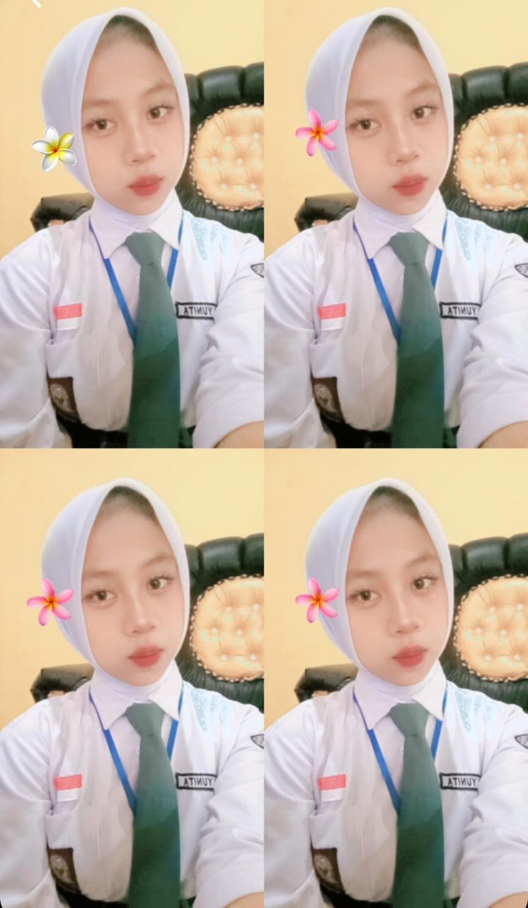
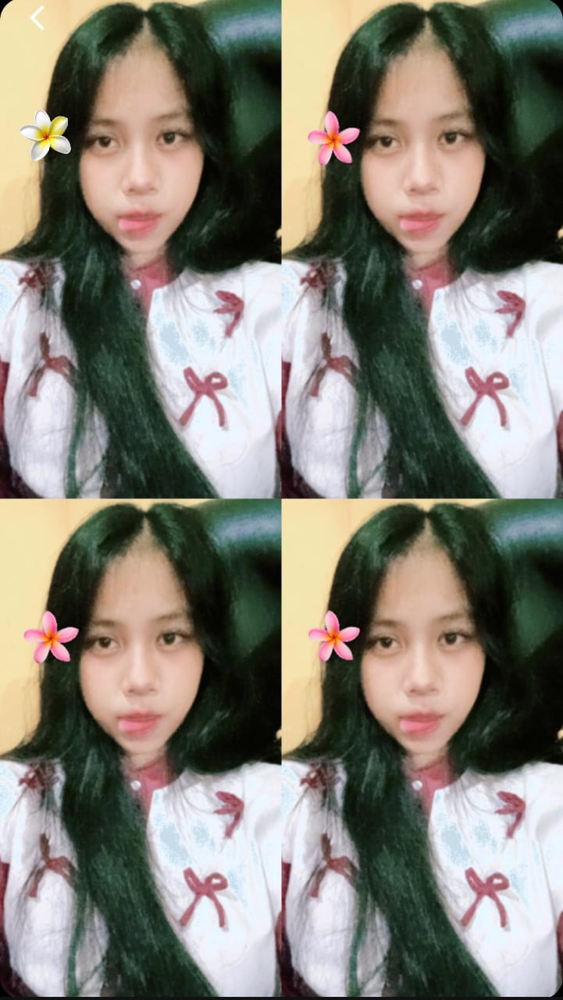

Apakah kamu mau lihat ucapan dari yang buat website ini?





ini adalah pap yang kamu kirim ke aku full muka kamu
makasih ya udah mau jadi temen aku :) semoga kamu mau ngasih
tau nama asli kamu
selanjutnya silahkan klik "Ya" di bawah gambar kamu untuk lihat ucapannya!
kalau kamu masih penasaran klik "Tidak" ya coba aja.